Library
library(readxl)
library(tidyverse)
library(lubridate)
library(sf)
library(janitor)
library(stringr)
library(magrittr)
library(stringi)
library(paletteer)
library(patchwork)
library(epitools)
invisible(Sys.setlocale("LC_TIME", "English"))library(readxl)
library(tidyverse)
library(lubridate)
library(sf)
library(janitor)
library(stringr)
library(magrittr)
library(stringi)
library(paletteer)
library(patchwork)
library(epitools)
invisible(Sys.setlocale("LC_TIME", "English"))### measles cases 2024-2025
cases_2425 <- read_excel("D:/OUCRU/sero_measles_nd2/data/Measles2018-2019-2024-2025_17.06.25.xlsx",sheet = "2024-2025")
### measles cases 2018
cases_18 <- read_excel("D:/OUCRU/sero_measles_nd2/data/Measles2018-2019-2024-2025_17.06.25.xlsx",
sheet = "2018")
### measles cases 2019
cases_19 <- read_excel("D:/OUCRU/sero_measles_nd2/data/Measles2018-2019-2024-2025_17.06.25.xlsx",
sheet = "2019")
### all measles sero (ndtp, nd2)
sero <- read_excel("D:/OUCRU/sero_measles_nd2/data/20240811_measles_titer_hcdc_with_meta.xlsx")
### vaccine registry data
vaxreg_hcmc_measles <- readRDS("D:/OUCRU/sero_measles_nd2/data/vaxreg_hcmc_measles.rds")
## hcmc population
census2019 <- readRDS("D:/OUCRU/hfmd/data/census2019.rds") %>%
filter(province == "Thành phố Hồ Chí Minh") %>%
mutate(age2 = word(age,1))
### HCMC map
map_path <- "D:/OUCRU/HCDC/project phân tích sero quận huyện/"
vn_qh <- st_read(dsn = file.path(map_path, "gadm41_VNM.gpkg"), layer = "ADM_ADM_2")
vn_qh1 <- vn_qh %>%
clean_names() %>% ## cho thành chữ thường
filter(
str_detect(
name_1,
"Hồ Chí Minh"
)
)
qhtp <- vn_qh1[-c(14,21),]
qhtp$geom[qhtp$varname_2 == "Thu Duc"] <- vn_qh1[c("21","24","14"),] %>%
st_union()
qhtp <- qhtp %>% st_cast("MULTIPOLYGON")
qhtp$varname_2 <- stri_trans_general(qhtp$varname_2, "latin-ascii") %>%
tolower() %>%
str_remove("district") %>%
trimws(which = "both")
qhtp$nl_name_2 <- c("BC","BTân","BT","CG","CC","GV",
"HM","NB","PN","1","10","11","12",
"3","4","5","6","7","8","TB",
"TP","TĐ")incidence_hcm <- cases_2425 %>%
filter(province == "TP.HCM") %>%
distinct(.keep_all = TRUE)
incidence_hcm <- incidence_hcm %>% mutate(
district2 = district %>%
str_replace_all(
c("Quận 2" = "Thủ Đức",
"Quận 9" = "Thủ Đức")) %>%
str_remove("Quận|Huyện") %>%
trimws(which = "both") %>%
stri_trans_general("latin-ascii") %>%
tolower() ,
agegr2 = factor(agegr,
levels = c("< 6th","6 - 9th","9th -12th","1 - 5T","6-10T","> 10T"),
labels = c("< 6m","6-9m","9-12m","1-5y","6-10y","> 10y")),
adm_month = month(admission),
adm_year = year(admission),
adm_month_cut = cut(adm_month,
breaks = c(0.5,3,6,9,12),
labels = c("Jan-Mar","Apr-June","Jul-Sep","Oct-Dec")),
adm_month_year_cut = str_c(adm_month_cut,adm_year,sep = " ") %>%
factor(levels = c("Apr-June 2024","Jul-Sep 2024","Oct-Dec 2024",
"Jan-Mar 2025","Apr-June 2025"))
)
tdnd2 <- data.frame(long = 106.7025,
lat = 10.7808) %>%
st_as_sf(coords = c("long", "lat"), crs = 4326)
incidene_36912 <- incidence_hcm %>%
group_by(adm_month_year_cut,district2) %>%
count() %>%
ungroup() %>%
group_by(adm_month_year_cut) %>%
group_modify(~.x %>% mutate(prevalence = n/sum(n)) %>%
left_join(qhtp, ., by = join_by(varname_2 == district2))) %>%
ggplot() +
geom_sf(aes(fill = prevalence,geometry = geom),show.legend = T)+
paletteer::scale_fill_paletteer_c("ggthemes::Classic Red",
labels = scales::label_percent(),
na.value="white",
name = "Prevalence")+
geom_sf_text(aes(label = nl_name_2,geometry = geom),size=1.5,color = "black")+
geom_sf(data = tdnd2, shape = 17,
color = "yellow", size = 1)+
facet_wrap(~factor(adm_month_year_cut,
levels = c("Apr-June 2024","Jul-Sep 2024","Oct-Dec 2024",
"Jan-Mar 2025","Apr-June 2025")),ncol = 3) +
labs(title = "Prevalence in 2024-2025 outbreak")+
theme_void()+
theme(legend.position = "bottom")
incidene_36912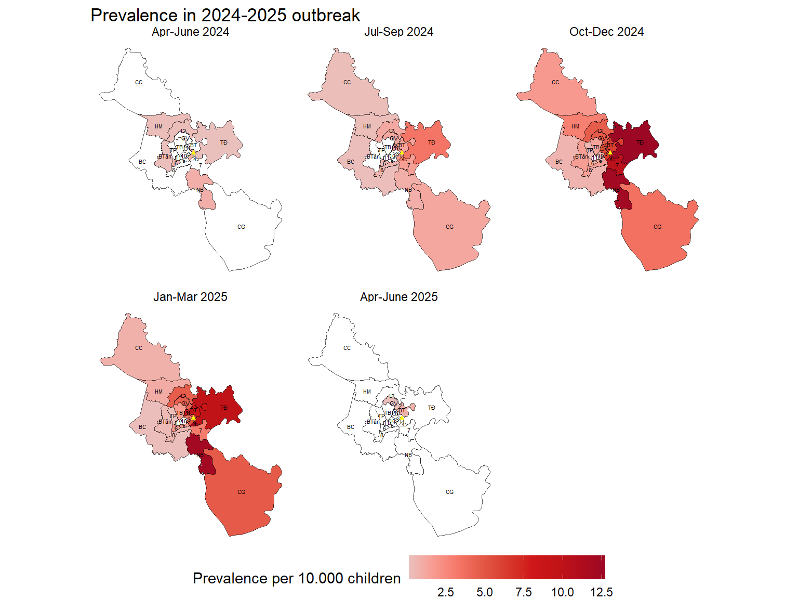
cases_hcm_18 <- cases_18 %>% filter(province == "TP. H.C.M") %>%
distinct(.keep_all = TRUE) %>%
select(id,gender,dob,agegr,district,admission)
cases_hcm_19 <- cases_19 %>% filter(province == "TP. H.C.M")%>%
distinct(.keep_all = TRUE) %>%
select(id,gender,dob,agegr,district,admission)
cases_hcm_1819 <- rbind(cases_hcm_18,cases_hcm_19) %>%
distinct(id,dob, .keep_all = TRUE) %>% mutate(
district2 = district %>%
str_replace_all(
c("Quận 2" = "Thủ Đức",
"Quận 9" = "Thủ Đức")) %>%
str_remove("Quận|Huyện") %>%
trimws(which = "both") %>%
stri_trans_general("latin-ascii") %>%
tolower() ,
agegr2 = factor(agegr,
levels = c("<6 THANG","6-9 THANG","9Thang -1 Tuoi",
"Từ 1-5 tuổi","Từ 5-10 tuổi","Trên 10 tuổi"),
labels = c("< 6m","6-9m","9-12m","1-5y","6-10y","> 10y")),
adm_month = month(admission),
adm_year = year(admission),
adm_month_cut = cut(adm_month,
breaks = c(0.5,3,6,9,12),
labels = c("Jan-Mar","Apr-June","Jul-Sep","Oct-Dec")),
adm_month_year_cut = str_c(adm_month_cut,adm_year,sep = " ")
)
cases_hcm_1819 %>%
group_by(adm_month_year_cut,district2) %>%
count() %>%
ungroup() %>%
group_by(adm_month_year_cut) %>%
group_modify(~.x %>% mutate(prevalence = n/sum(n)) %>%
left_join(qhtp, ., by = join_by(varname_2 == district2))) %>%
ggplot() +
geom_sf(aes(fill = prevalence,geometry = geom),show.legend = T)+
paletteer::scale_fill_paletteer_c("ggthemes::Classic Red",
labels = scales::label_percent(),
na.value="white",
name = "Prevalence")+
geom_sf_text(aes(label = nl_name_2,geometry = geom),size=1.5,color = "black")+
geom_sf(data = tdnd2, shape = 17,
color = "yellow", size = 1)+
facet_wrap(~factor(adm_month_year_cut,
levels = c("Apr-June 2018","Jul-Sep 2018","Oct-Dec 2018",
"Jan-Mar 2019","Apr-June 2019","Jul-Sep 2019",
"Oct-Dec 2019")),
ncol = 4) +
labs(title = "Prevalence in 2018-2019 outbreak")+
theme_void()+
theme(legend.position = "bottom")sero_nd2 <- sero %>% filter(hospital == "Bv Nhi Dong 2") %>%
select(pos,district,age,age_1y,age_5y,sampling_period)
sero_nd2$sampling_period <- sero_nd2$sampling_period %>% as.Date()
sero_nd2 <- sero_nd2 %>% mutate(
district2 = district %>%
stri_trans_general("latin-ascii") %>%
str_remove("Tp|^0") %>%
trimws(which = "both") %>%
tolower() ,
samp_month = month(sampling_period),
samp_year = year(sampling_period)
)
sero_negative_district <- sero_nd2 %>%
group_by(sampling_period,district2) %>%
count(pos) %>%
pivot_wider(names_from = pos,
values_from = n,
names_prefix = "pos_") %>%
replace(is.na(.), 0) %>%
ungroup() %>%
mutate(total = pos_0+pos_1,
sp = pos_1/total,
sneg = 1 - sp) %>%
group_by(sampling_period) %>%
group_modify(~.x %>% left_join(qhtp, ., by = join_by(varname_2 == district2))) %>%
ungroup() %>%
ggplot() +
geom_sf(aes(fill = sneg,geometry = geom),show.legend = T)+
paletteer::scale_fill_paletteer_c("ggthemes::Classic Red",
labels = scales::label_percent(),
na.value="white",
name = "Sero-negative")+
geom_sf_text(aes(label = nl_name_2,geometry = geom),size=1.5,color = "black")+
geom_sf(data = tdnd2, shape = 17,
color = "yellow", size = 1)+
facet_wrap(~factor(sampling_period,
labels = c("Sep 2022","Dec 2022","Mar 2023",
"June 2023","Oct 2023","Dec 2023")),
ncol = 3) +
labs(title = "Sero-negative from Sep 2022 - Dec 2023")+
theme_void()+
theme(legend.position = "bottom")
sero_negative_district Catchment area of Children Hospital 2 was calculated by cummulative cases ratio method (Zinszer et al. 2014).
The cumulative case ratio was defined as the ratio of the observed to the expected number of measles visits to CH2 from a district. The expected number of measles visits to CH2 from a particular district was calculated by multiplying the district’s population by the cumulative case rate for that hospital.
\[ \begin{align} Cummulative \ cases \ rate &= \frac{observed \ cases \ (districts)}{expected \ cases \ (districts)} \\ &= \frac{observed \ cases \ (districts)}{district \ population \times cummulative \ cases \ rate \ (hospitals)} \end{align} \]
\[ cummulative \ cases \ rate \ (hospitals)= \frac{cases \ observed \ (hospital)}{population \ of \ HCMC} \]
A district was included in the catchment area if the upper limit of the 95% confidence interval for the cumulative case ratio for that district was 1 or greater because a ratio less than 1 indicated that the district contributed significantly fewer measles visits than expected for its population
hcm_pop_19 <- census2019 %>% mutate(
district = district %>%
str_replace_all(
c("Quận 2" = "Thủ Đức",
"Quận 9" = "Thủ Đức")) %>%
str_remove("Quận|Huyện") %>%
trimws(which = "both") %>%
stri_trans_general("latin-ascii") %>%
tolower()) %>%
group_by(district) %>%
summarise(pop = sum(n))
ch2_obs <- incidence_hcm %>% nrow()
ch2_cum_case_rate <- ch2_obs/sum(hcm_pop_19$pop)
catchment_ch2_2425 <- incidence_hcm %>%
group_by(district2) %>%
count() %>%
left_join(hcm_pop_19,., by = join_by(district == district2)) %>%
replace(is.na(.), 0) %>%
mutate(expected_cases = pop*ch2_cum_case_rate,
cum_case_ratio = n/expected_cases,
lwr = pois.exact(n)$lower/expected_cases,
upr = pois.exact(n)$upper/expected_cases,
cut = cut(upr,
breaks = c(0,1,2,3,10),
labels = c("< 1",">= 1",">= 2",">= 3"),
right = F)
)
catchment_ch2_2425 %>%
left_join(qhtp, ., by = join_by(varname_2 == district))%>%
ggplot() +
geom_sf(aes(fill = cut,geometry = geom),show.legend = T)+
scale_fill_manual(
values = c(
"< 1" = "#FFFFFFFF",
">= 1" = "#6BAED6FF",
">= 2" = "#2171B5FF",
">= 3" = "#08306BFF"
),
name = "95% CI Upper bound of \n cumulative case ratio of each districts"
)+
geom_sf_text(aes(label = nl_name_2,geometry = geom),size=2,color = "black")+
geom_sf(data = tdnd2, shape = 17,
color = "yellow", size = 1)+
theme_void()ch2_obs_1819 <- cases_hcm_1819 %>% nrow()
ch2_cum_case_rate <- ch2_obs_1819/sum(hcm_pop_19$pop)
catchment_ch2_1819 <- cases_hcm_1819 %>%
group_by(district2) %>%
count() %>%
left_join(hcm_pop_19,., by = join_by(district == district2)) %>%
replace(is.na(.), 0) %>%
mutate(expected_cases = pop*ch2_cum_case_rate,
cum_case_ratio = n/expected_cases,
lwr = pois.exact(n)$lower/expected_cases,
upr = pois.exact(n)$upper/expected_cases,
cut = cut(upr,
breaks = c(0,1,2,3,10),
labels = c("< 1",">= 1",">= 2",">= 3"),
right = F)
)
catchment_ch2_1819 %>%
left_join(qhtp, ., by = join_by(varname_2 == district)) %>%
ggplot() +
geom_sf(aes(fill = cut,geometry = geom),show.legend = T)+
scale_fill_manual(
values = c(
"< 1" = "#FFFFFFFF",
">= 1" = "#6BAED6FF",
">= 2" = "#2171B5FF",
">= 3" = "#08306BFF"
),
name = "95% CI Upper bound of \n cumulative case ratio of each districts"
)+
geom_sf_text(aes(label = nl_name_2,geometry = geom),size=2,color = "black")+
geom_sf(data = tdnd2, shape = 17,
color = "yellow", size = 1)+
theme_void()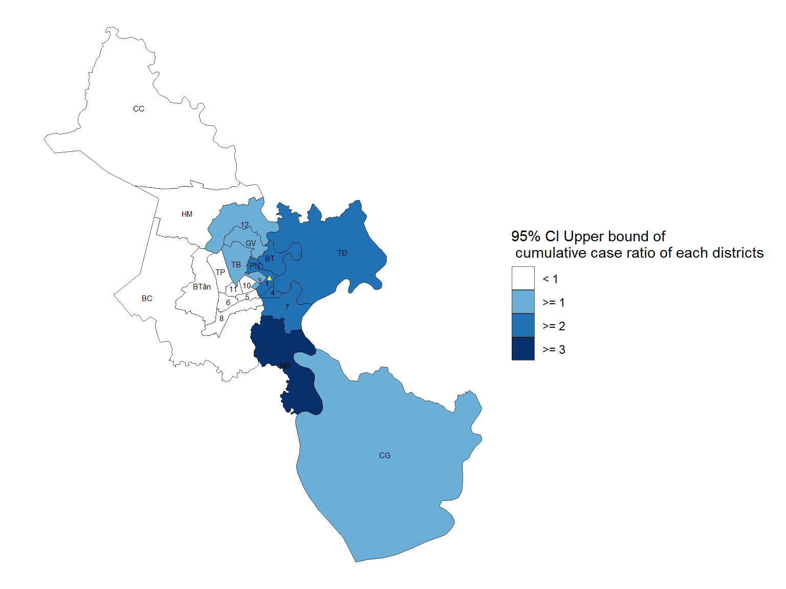
The results show a similarity in the CH2 catchment areas of the two outbreaks (2018-2019 and 2024-2025). Hoc Mon was part of the CH2 catchment area in 2018-2019 but not in 2024-2025.
Now we only analyse districts in CH2 catchment area
district_consider <- catchment_ch2_1819 %>%
filter(cut != "< 1") %>%
pull(district) %>% as.character()
sero_neg_cm <- sero_nd2 %>%
filter(district2 %in% district_consider) %>%
group_by(district2) %>%
count(pos) %>%
pivot_wider(names_from = pos,
values_from = n,
names_prefix = "pos_") %>%
replace(is.na(.), 0) %>%
ungroup() %>%
mutate(total = pos_0+pos_1,
sp = pos_1/total,
sneg = 1 - sp) %>%
left_join(qhtp, ., by = join_by(varname_2 == district2)) %>%
ungroup() %>%
ggplot() +
geom_sf(aes(fill = sneg,geometry = geom),show.legend = T)+
paletteer::scale_fill_paletteer_c("ggthemes::Classic Red",
labels = scales::label_percent(),
na.value="white",
name = "Sero-negative")+
geom_sf_text(aes(label = nl_name_2,geometry = geom),size=1.5,color = "black")+
geom_sf(data = tdnd2, shape = 17,
color = "yellow", size = 1)+
theme_void()+
theme(legend.position = "top",
legend.key.width = unit(1, "cm"))
prevalence_cm <- incidence_hcm %>%
filter(district2 %in% district_consider) %>%
group_by(district2) %>%
count() %>%
left_join(hcm_pop_19, ., by = join_by(district == district2)) %>%
na.omit(n) %>%
mutate(prevalence = n/pop) %>%
left_join(qhtp, ., by = join_by(varname_2 == district)) %>%
ggplot() +
geom_sf(aes(fill = prevalence*10000,geometry = geom),show.legend = T)+
paletteer::scale_fill_paletteer_c("ggthemes::Classic Red",
# labels = scales::label_percent(),
na.value="white",
name = "Prevalence per 10.000 people")+
geom_sf_text(aes(label = nl_name_2,geometry = geom),size=1.5,color = "black")+
geom_sf(data = tdnd2, shape = 17,
color = "yellow", size = 1)+
theme_void()+
theme(legend.position = "top")
sero_neg_cm | prevalence_cm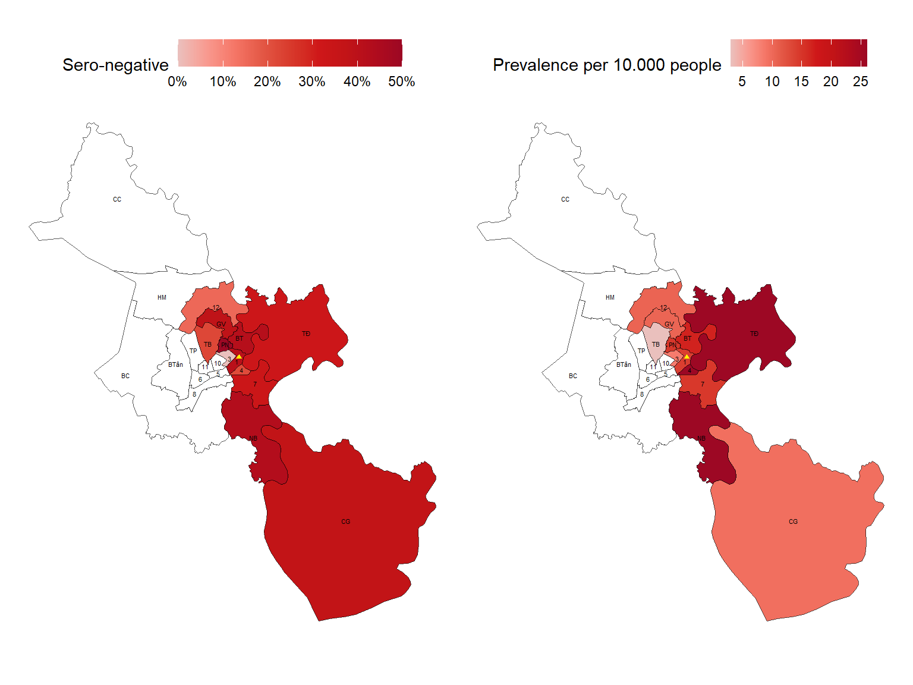
I plotted prevalence and sero-negativity to see whether there is a linear relationship between these variables
library(ggstatsplot)
sero_cm <- sero_nd2 %>%
filter(district2 %in% district_consider) %>%
group_by(district2) %>%
count(pos) %>%
pivot_wider(names_from = pos,
values_from = n,
names_prefix = "pos_") %>%
replace(is.na(.), 0) %>%
ungroup() %>%
mutate(total = pos_0+pos_1,
sp = pos_1/total,
sneg = 1 - sp)
cases_cm <- incidence_hcm %>%
filter(district2 %in% district_consider) %>%
group_by(district2) %>%
count() %>%
left_join(hcm_pop_19, ., by = join_by(district == district2)) %>%
na.omit(n) %>%
mutate(prevalence_10000 = (n/pop)*10000)
left_join(cases_cm,sero_cm,by = join_by(district == district2)) %>%
ggscatterstats(
# data = cor_matrix,
x = sneg,
y = prevalence_10000,
bf.message = FALSE,
marginal = FALSE,
label.var = district,
xlab = "Sero-negative before 2024",
ylab = "Prevalence per 10000 people"
)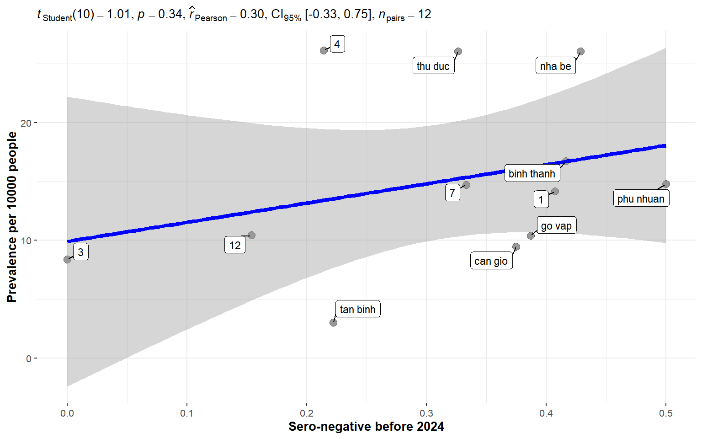
The plot shows a linear trend but no significant correlation between sero-negativity and prevalence across districts in the CH2 catchment area.
sero_cm_23 <- sero_nd2 %>%
filter(district2 %in% district_consider & samp_year == 2023) %>%
group_by(district2) %>%
count(pos) %>%
pivot_wider(names_from = pos,
values_from = n,
names_prefix = "pos_") %>%
replace(is.na(.), 0) %>%
ungroup() %>%
mutate(total = pos_0+pos_1,
sp = pos_1/total,
sneg = 1 - sp)
left_join(cases_cm,sero_cm_23,by = join_by(district == district2)) %>%
ggscatterstats(
x = sneg,
y = prevalence_10000,
bf.message = FALSE,
marginal = FALSE,
label.var = district,
xlab = "Sero-negative in 2023",
ylab = "Prevalence per 10000 people"
)## district population per age group
pop_dis_age_cm <- census2019 %>% mutate(
district = district %>%
str_replace_all(
c("Quận 2" = "Thủ Đức",
"Quận 9" = "Thủ Đức")) %>%
str_remove("Quận|Huyện") %>%
trimws(which = "both") %>%
stri_trans_general("latin-ascii") %>%
tolower(),
agegr = cut(as.numeric(age2),
breaks = c(0,1,5,10,100),
labels = c("< 1y","1-5y","6-10y","> 10y"))
) %>%
group_by(district,agegr) %>%
summarise(pop = sum(n),.groups = "drop")
## prevalence per 10000 of districts
pre_dis_agr <- incidence_hcm %>%
filter(district2 %in% district_consider) %>%
mutate(
agegr3 = case_when(
agegr2 %in% c("< 6m","6-9m","9-12m") ~ "< 1y",
!(agegr2 %in% c("< 6m","6-9m","9-12m")) ~ agegr2),
agegr3 = factor(agegr3, levels = c(c("< 1y","1-5y","6-10y","> 10y")))) %>%
group_by(district2,agegr3) %>%
count() %>%
ungroup() %>%
left_join(.,pop_dis_age_cm,by = join_by(district2 == district,
agegr3 == agegr)) %>%
mutate(pre_10000 = (n/pop)*10000)
## sero negative per district
sneg_dis_agr <- sero_nd2 %>%
filter(district2 %in% district_consider) %>%
mutate(age_gr = cut(as.numeric(age),
breaks = c(0,1,5,10,100),
labels = c("< 1y","1-5y","6-10y","> 10y"))
) %>%
group_by(district2,age_gr) %>%
count(pos) %>%
pivot_wider(names_from = pos,
values_from = n,
names_prefix = "pos_") %>%
replace(is.na(.), 0) %>%
ungroup() %>%
mutate(total = pos_0+pos_1,
sp = pos_1/total,
sneg = 1 - sp)
## plot function
plot_dis_age_pre <- function(data,agegr){
df_plot <- data %>% filter(agegr3 == agegr)
df_plot %>%
left_join(qhtp, ., by = join_by(varname_2 == district2)) %>%
ggplot() +
geom_sf(aes(fill = pre_10000,geometry = geom),show.legend = T)+
paletteer::scale_fill_paletteer_c("ggthemes::Classic Red",
# labels = scales::label_percent(),
na.value="white",
name = "Prevalence per 10.000 people") +
geom_sf_text(aes(label = nl_name_2,geometry = geom),size=1.5,color = "black")+
geom_sf(data = tdnd2, shape = 17,
color = "yellow", size = 1)+
# labs(tag = agegr) +
theme_void()+
theme(legend.position = "top")
}
plot_dis_age_sneg <- function(data,agegr){
data %>% filter(age_gr == agegr) %>%
left_join(qhtp, ., by = join_by(varname_2 == district2)) %>%
ggplot() +
geom_sf(aes(fill = sneg,geometry = geom),show.legend = T)+
paletteer::scale_fill_paletteer_c("ggthemes::Classic Red",
labels = scales::label_percent(),
na.value="white",
name = "Sero negative \n before 2024") +
geom_sf_text(aes(label = nl_name_2,geometry = geom),size=1.5,color = "black")+
geom_sf(data = tdnd2, shape = 17,
color = "yellow", size = 1)+
theme_void()+
theme(legend.position = "top",
legend.key.width = unit(1, "cm"))
}plot_dis_age_pre(data = pre_dis_agr,agegr = "< 1y") | plot_dis_age_sneg(data = sneg_dis_agr ,agegr = "< 1y")
## correlation plot
left_join(pre_dis_agr,sneg_dis_agr,by = join_by(district2,
agegr3 == age_gr)) %>%
replace(is.na(.), 0) %>%
filter(agegr3 == "< 1y") %>%
ggscatterstats(
# data = cor_matrix,
x = sneg,
y = pre_10000,
bf.message = FALSE,
marginal = FALSE,
label.var = district2,
xlab = "Sero-negative before 2024",
ylab = "Prevalence per 10.000 people"
)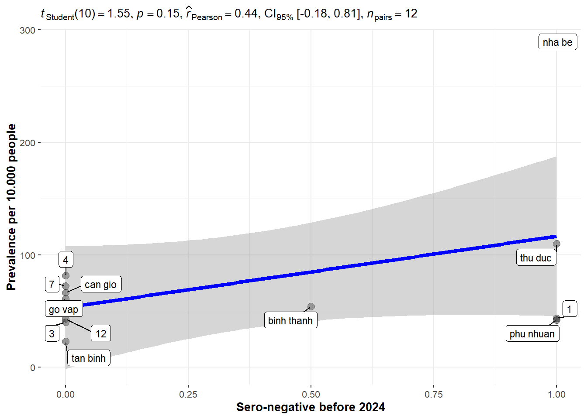
plot_dis_age_pre(data = pre_dis_agr,agegr = "1-5y") | plot_dis_age_sneg(data = sneg_dis_agr,agegr = "1-5y")## correlation plot
left_join(pre_dis_agr,sneg_dis_agr,by = join_by(district2,
agegr3 == age_gr)) %>%
replace(is.na(.), 0) %>%
filter(agegr3 == "1-5y") %>%
ggscatterstats(
# data = cor_matrix,
x = sneg,
y = pre_10000,
bf.message = FALSE,
marginal = FALSE,
label.var = district2,
xlab = "Sero-negative before 2024",
ylab = "Prevalence per 10.000 people"
)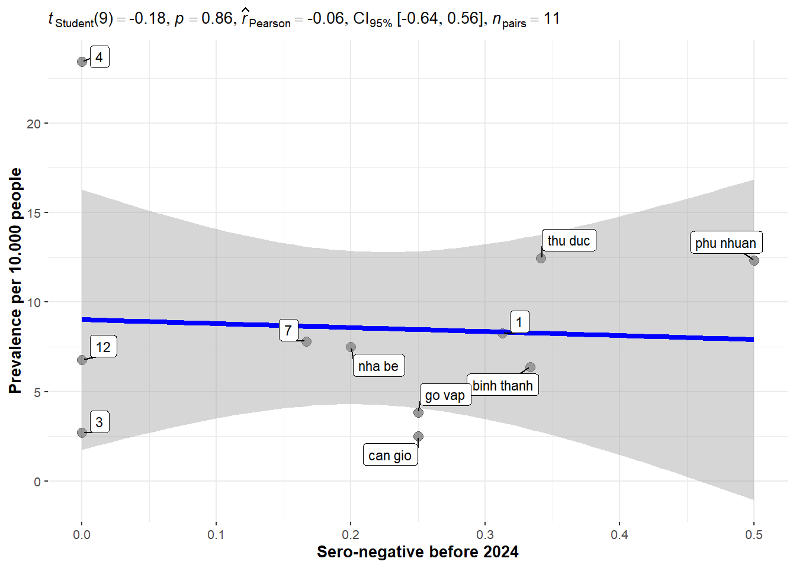
plot_dis_age_pre(data = pre_dis_agr,agegr = "6-10y") | plot_dis_age_sneg(data = sneg_dis_agr,agegr = "6-10y")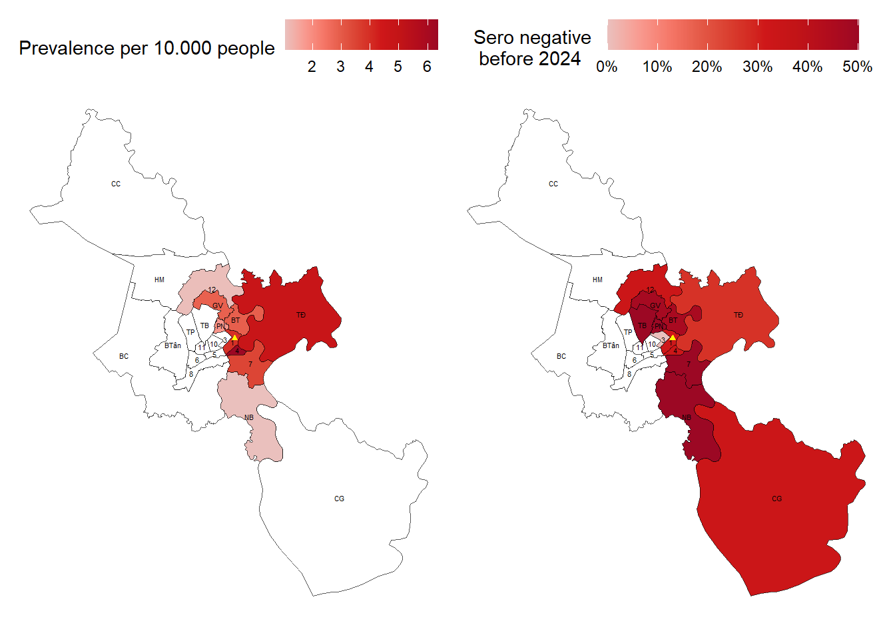
## correlation plot
left_join(pre_dis_agr,sneg_dis_agr,by = join_by(district2,
agegr3 == age_gr)) %>%
replace(is.na(.), 0) %>%
filter(agegr3 == "6-10y") %>%
ggscatterstats(
# data = cor_matrix,
x = sneg,
y = pre_10000,
bf.message = FALSE,
marginal = FALSE,
label.var = district2,
xlab = "Sero-negative before 2024",
ylab = "Prevalence per 10.000 people"
)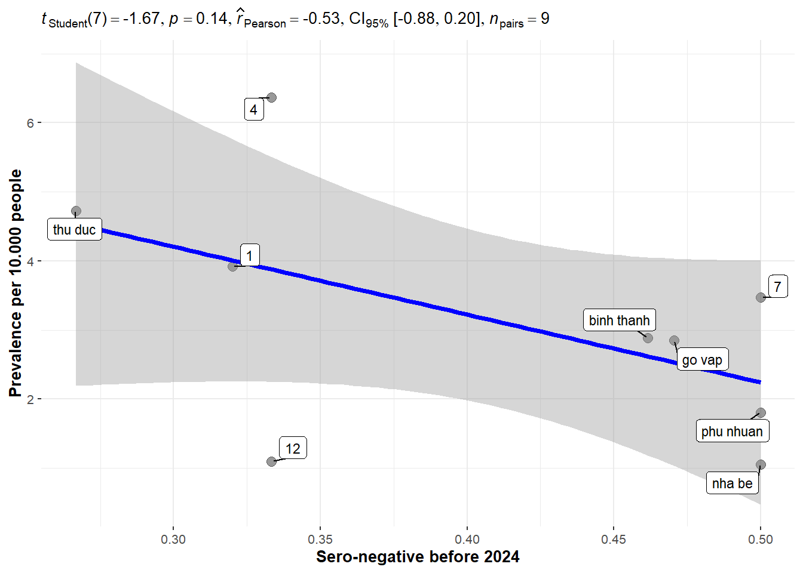
plot_dis_age_pre(data = pre_dis_agr,agegr = "> 10y") | plot_dis_age_sneg(data = sneg_dis_agr,agegr = "> 10y") 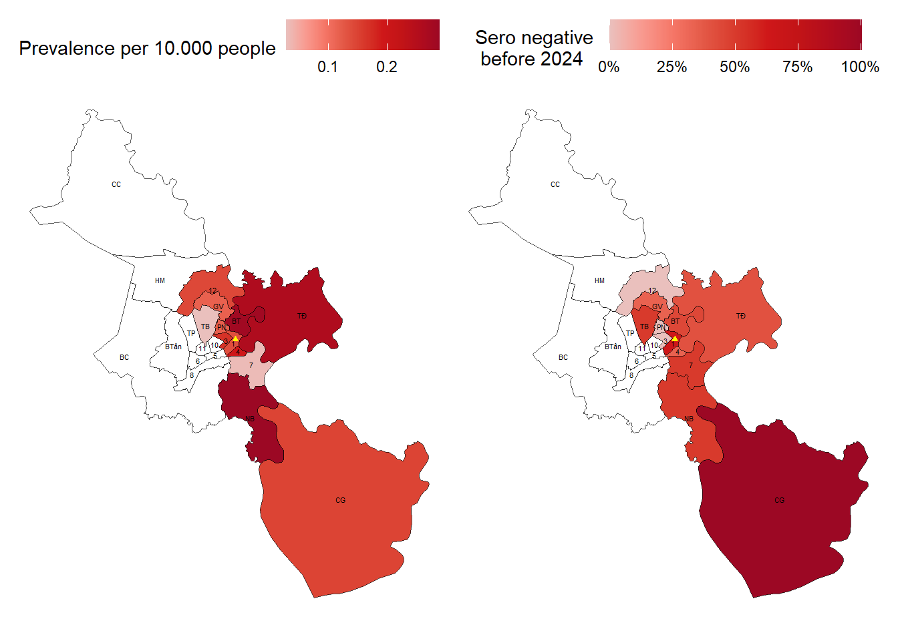
## correlation plot
left_join(pre_dis_agr,sneg_dis_agr,by = join_by(district2,
agegr3 == age_gr)) %>%
replace(is.na(.), 0) %>%
filter(agegr3 == "> 10y") %>%
ggscatterstats(
# data = cor_matrix,
x = sneg,
y = pre_10000,
bf.message = FALSE,
marginal = FALSE,
label.var = district2,
xlab = "Sero-negative before 2024",
ylab = "Prevalence per 10.000 people"
)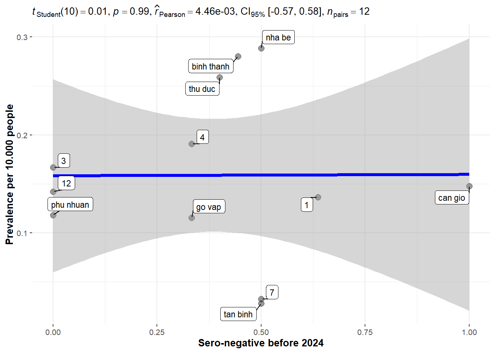
In this section, I followed the (Hens et al. 2015) article. Using GAM model fitted to seroprevalence data of districts in CH2 catchment area with cloglog link function. The smooth function \(s_1\) was one-dimensional cubic splines, and \(te\) referring to tensor product thin-plate regression splines allowing for differential smoothing along the two dimensions.
\[ seropositive \sim s_1(age) + te(x,y) \] With x, y are spatial coordinates.
## extract x and y coordinates
centroids <- st_centroid(qhtp)
district_xy <- centroids %>%
mutate(
lon = st_coordinates(centroids)[,1],
lat = st_coordinates(centroids)[,2]
) %>%
select(district = varname_2, lon, lat) %>%
as.data.frame() %>%
select(-geom)
sero_nd2_cm_23 <- sero_nd2 %>%
filter(district2 %in% district_consider & samp_year == 2023) %>%
group_by(district2,age_1y) %>%
count(pos) %>%
pivot_wider(names_from = pos,
values_from = n,
names_prefix = "pos_") %>%
replace(is.na(.), 0) %>%
ungroup() %>%
mutate(total = pos_0+pos_1) %>%
group_by(district2) %>%
left_join(.,district_xy, by = join_by(district2 == district))library(mgcv)
library(plotly)
attach(sero_nd2_cm_23)
y = cbind(pos_1,total)
a = age_1y
model <- gam(y~s(a,bs = "cr") + te(lat,lon,bs = "tp"),
family=binomial(link="cloglog"))
new_df <- district_xy %>%
filter(district %in% district_consider) %>%
crossing(a = seq(0, 15, length.out = 512)) %>%
select(-district)
sp_dis_cm <- predict(model,new_df,type = "response") %>%
tibble(new_df,
sero = .,
sneg = 1 - sero) %>%
left_join(.,district_xy, by = join_by(lat,lon))
dis_lvls_sp_based <- reorder(sp_dis_cm$district,sp_dis_cm$sneg) %>% levels()
sp_dis_cm %>%
ggplot(aes(x = a,
y = sneg,
color = factor(district,levels = dis_lvls_sp_based)))+
geom_line()+
scale_y_continuous(name = "Seronegative in 2023")+
scale_color_discrete(name = "Districts",
guide = guide_legend(reverse = TRUE))+
labs(x = "Age")+
theme_minimal()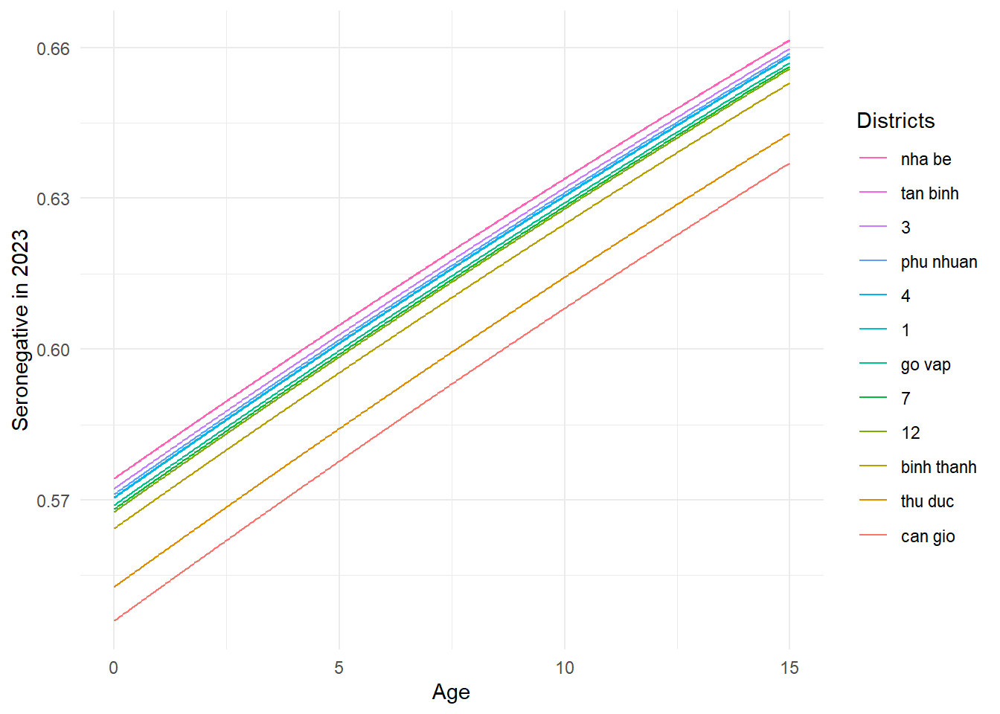
The order of legend is similiar with the color line
sero_nd2_cm_23 %>% head(20)# A tibble: 20 × 7
# Groups: district2 [2]
district2 age_1y pos_0 pos_1 total lon lat
<chr> <dbl> <int> <int> <int> <dbl> <dbl>
1 1 1 1 0 1 107. 10.8
2 1 2 0 2 2 107. 10.8
3 1 3 0 3 3 107. 10.8
4 1 4 1 1 2 107. 10.8
5 1 6 2 7 9 107. 10.8
6 1 7 2 0 2 107. 10.8
7 1 8 1 3 4 107. 10.8
8 1 9 0 1 1 107. 10.8
9 1 10 1 4 5 107. 10.8
10 1 11 1 1 2 107. 10.8
11 1 12 3 0 3 107. 10.8
12 1 13 0 2 2 107. 10.8
13 1 14 1 0 1 107. 10.8
14 1 15 1 1 2 107. 10.8
15 12 2 0 1 1 107. 10.9
16 12 3 0 2 2 107. 10.9
17 12 4 0 1 1 107. 10.9
18 12 9 0 1 1 107. 10.9
19 12 10 1 1 2 107. 10.9
20 12 11 0 2 2 107. 10.9Follow (Hens et al. 2015), I use the model to estimate age-dependent susceptibility profiles in 2023.
\[ 1-s_{(a)} = e^{-\gamma_2 \times (a-{age\ at \ dose \ 2})} \times \rho v_2 \]
\(\rho\) is the seroconversion rate = 0.977 (95% CI: 0.959 − 0.990), \(\gamma_2\) is the decay rates of vaccine-induced immunity related to dose 2, age at dose 2 is 18 month = 1.5 years. \(v_2\) is the measles dose 2 vaccine coverage of districts
vax_cov_age_dis <- vaxreg_hcmc_measles %>%
mutate(age_at_2023 = interval(dob, as.Date("2023-12-31")) / years(1),
age_round_23 = round(age_at_2023),
district2 = district %>%
trimws(which = "both") %>%
stri_trans_general("latin-ascii") %>%
tolower()) %>%
group_by(district2,age_round_23) %>%
count(is_m2) %>%
pivot_wider(names_from = is_m2,
values_from = n,
names_prefix = "m2_") %>%
replace(is.na(.), 0) %>%
ungroup() %>%
mutate(m2_covr = m2_1/(m2_0+m2_1))
vax_cov_age_dis %>%
filter(district2 %in% district_consider) %>%
filter(age_round_23 != 0) %>%
mutate(age_from_m2 = age_round_23-1.5,
adjust_cvr = exp(-0.008*(age_from_m2))*0.977*m2_covr) %>%
ggplot(aes(x = factor(district2,levels = dis_lvls_sp_based),
y = 1 - adjust_cvr))+
geom_col()+
facet_wrap(~age_round_23, ncol = 4,
labeller = labeller(age_round_23 = function(x) paste0(x, " year-old")))+
scale_y_continuous(limits = c(0,1),
labels = scales::label_percent())+
labs(x = "Districts", y = "The proportion of susceptible until the end of 2023")+
theme_bw()+
theme(axis.text.x = element_text(angle = 45,vjust = 0.5))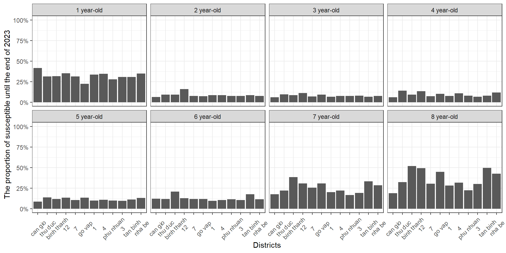
The order of districts in x axis (left to right) follow the increase of seronegative in the plot above
Let see the age distribution of measles prevalence in CH2 cathment
pre_dis_agr %>%
group_by(agegr3) %>%
ggplot(aes(x = factor(district2,levels = dis_lvls_sp_based),
y = pre_10000))+
geom_col()+
facet_wrap(~agegr3,ncol = 4)+
labs(x = "Districts", y = "Prevalence per 10.000 people")+
theme_bw()+
theme(axis.text.x = element_text(angle = 45,vjust = 0.5))The order of districts in x axis (left to right) follow the increase of seronegative in the plot above